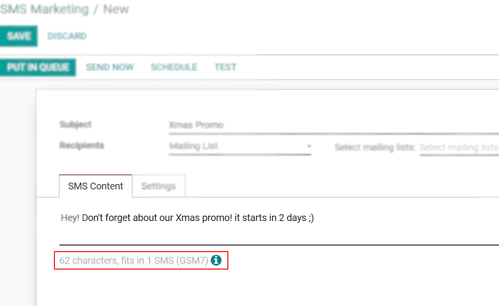
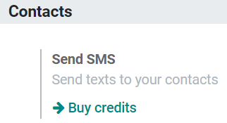

SMS Pricing and FAQ¶
What do I need to send SMSs?¶
SMS Text Messaging is an In-App Purchase (IAP) service that requires prepaid credits to work.
How many types of SMSs are there?¶
There are 2 types: GSM7 and UNICODE.
GSM7 is the standard format, with a limit of 160 characters per message, that includes the following characters:

UNICODE is the format applied if a special character, that is not in the GSM7 list, is used. Limit per SMS: 70 characters.
Note
For GSM7 SMS the size limit is 160 characters, and for Unicode is 70. Above these limits, the content is divided into a multi-part message and the limit of characters is lowered to 153 for GSM7 and to 67 for Unicode. Then, in real-time, the system displays the number of SMS mailings the message represents.
How much does it cost to send an SMS?¶
The price of an SMS depends on the destination and the length (number of characters) of the message. To see the price per country, please consult: Odoo SMS - FAQ.
The number of SMSs a message represents will always be available in the database.
How to buy credits¶
Go to .
Or go to .
Tip
If Odoo Online (Saas) is being used, along with the Enterprise version, free trial credits are available to test the feature.
More common questions¶
- Is there an expiration time for my credits?No, credits do not expire.
- Can I send an SMS to a phone number (which is not a mobile phone) because I see the icon in front of the field “phone”?Only if that phone number supports SMS (e.g. SIP phones).
- Do I receive an invoice to buy my credits?Yes.
- Can the recipient answer me?No, it is not possible to reply to the SMS.
- What happens if I send multiple SMSs at once, but I don’t have enough credits to send them all?Multiple SMS communications at once at are counted as a single transaction, so no SMSs will be sent until there are enough credits to send them all.
- Do I have a history of the sent SMSs?A history of sent SMSs, along with all pertinent information related to its sent contacts (and the message itself), can be found in the Sent column of the main SMS Marketing dashboard (while in Kanban view).
For more detailed information, select a desired SMS from the main dashboard (in Kanban view), and click on either link in the blue banner above the SMS detail form to learn more.
- Can I send as many SMSs I want at once?Yes, if you have enough credits.
- If an SMS is sent to a number that doesn’t exist in the list of recipients, will credits be lost?No, not if the phone number is incorrectly formatted (e.g. too many digits). However, if the SMS is sent to the wrong person (or to a fake number), the credit for that SMS will be lost.
- What happens if I send my SMS to a paying number (e.g.: a contest to win a ticket for a festival)?The SMS will not be delivered to that kind of number, so no charges will be made.
- Can I identify the numbers that do not exist when I send several SMSs?Only the ones that have an invalid format.
- How does the GDPR regulation affect this service?Please find our Privacy Policy here.
- Can I use my own SMS provider?Yes, but it is not possible out-of-the-box. Odoo experts can help customize a database to allow for the use of a personal SMS provider. Please check our success packs here.